Comparing data distributions
| dplyr | ggplot2 | lattice |
|---|---|---|
| 1.0.3 | 3.3.3 | 0.20.41 |
This material can be read in conjunction with section 2.2 of Cleveland’s book.
Let’s compare singer heights between the Bass 2 group and Tenor 1 group. We will work off of a subset of Cleveland’s singer dataset which can be found in the lattice package.
library(dplyr)
library(ggplot2)
df <- lattice::singer
df2 <- filter(df, voice.part == "Bass 2" | voice.part=="Tenor 1") %>%
mutate(voice.part = droplevels(voice.part))Let’s plot both datasets side-by-side. We will jitter the points about their category groups to expose overlapping points.
ggplot(df2, aes(y=height, x=voice.part, col=voice.part)) +
geom_jitter(position = position_jitter(width = .1, height=0))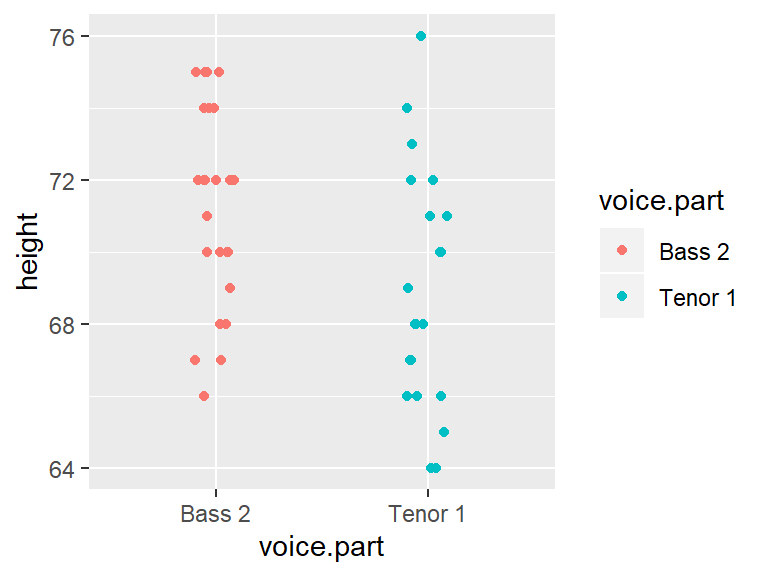
Let’s get the count and median values for both batches.
df2 %>% group_by(voice.part) %>% summarise(median = median(height), count = n() )# A tibble: 2 x 3
voice.part median count
* <fct> <dbl> <int>
1 Bass 2 72 26
2 Tenor 1 68 21The basest tend to be slightly taller than the Tenor–this is one way to compare the batches. But how do their distributions differ? We will explore this in the next section.
Boxplots
We can compare the batches using side-by-side boxplots.
ggplot(df2) + aes(x = voice.part, y = height) + geom_boxplot()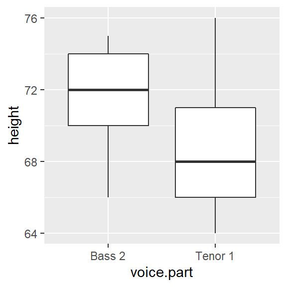
The differences in median values is obvious. What’s more, the difference in overall height values is more pronounced with the boxplot than it is with a simple point distributions plot shown earlier.
Are the spreads between the batches comparable? It’s difficult to tell given that the batches are offset by about four inches. So let’s level the playing field by subtracting the median values from their respective batches.
df2.med <- df2 %>%
group_by(voice.part) %>%
mutate( NormHeight = height - median(height))
ggplot(df2.med, aes(x=voice.part, y=NormHeight)) + geom_boxplot()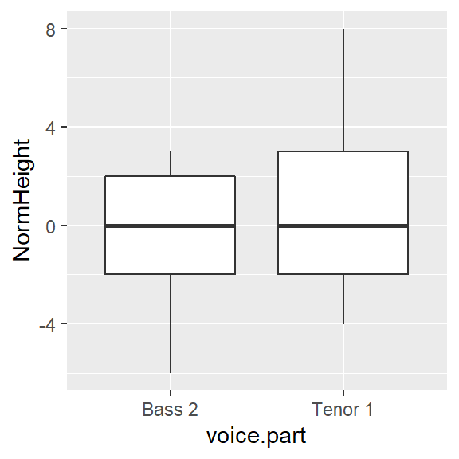
Leveling the boxplots certainly helps in assessing the difference in spreads. It seems that the Tenor 1 group has a slightly wider range of heights than the Bass 2 group. About 50% of singers in the Tenor 1 group have heights that range five inches whereas the singers in the Bass 2 group have heights that range four inches. We also note that the Tenor 1 height distribution tends to be skewed towards taller singers whereas the Bass 2 height distribution tends to be a little less skewed toward smaller heights.
The quantile-quantile (Q-Q) plot
A quantile-quantile plot (or Q-Q plot for short) combines two separate quantile plots from different batches of values by pairing the point values by their common \(f\)-value.

First, we need to compute the \(f\)-values for both batches of singer data (Bass 2 and Tenor 1).
df.qq <- df2 %>%
group_by(voice.part) %>%
arrange(height) %>%
mutate( f.val = (row_number() - 0.5 ) / n())Now let’s generate quantile plots for both batches.
ggplot(df.qq, aes(x=f.val, y = height)) + geom_line(col="grey") +
geom_point() + facet_grid( voice.part ~ .) 
While the geometric structure of a boxplot lends itself well to side-by-side comparison, the same cannot be said for side-by-side quantile plot comparison hence the need for an amalgamation of these two plots into a single plot called a quantile-quantile (q-q) plot. If the number of values in both batches are equal, then the plotting process is straightforward: sort both batches (from smallest value to largest value), then pair up the sorted values and plot one batch vs. the other batch (see schematic at the beginning of this section)
If the two batches differ in size (as is the case with our example where we have 21 tenors and 26 bassists), we won’t be able to match sorted values. For example, in the above graph, you’ll note that one of the singer’s height in the Bass 2 batch is associated with an \(f\)-value of 0.75, however, there are no singer heights associated with an \(f\)-value of 0.75 in the Tenor 1 batch.
To overcome the problem of batch size mismatch, we limit the number of points in the q-q plot to the number of values associated with the smallest sized batch (21 in our working example). This requires that we find matching singer height values to the set of \(f\)-values associated with a batch of 21 values. The following chunk of code computes the 21 \(f\)-values. We are rounding the output to two decimal places for presentation only.
# Generate and index
i <- 1:21
# Compute the f-values
fi <- (i - 0.5) / 21
# view rounded values
round(fi,2) [1] 0.02 0.07 0.12 0.17 0.21 0.26 0.31 0.36 0.40 0.45 0.50 0.55 0.60 0.64 0.69 0.74 0.79 0.83 0.88 0.93 0.98To find the matching singer height values in Bass2, we need to interpolate the original height values. In practice, a linear interpolation is sought unless theory justifies otherwise.
We will explore two methods: a manual approach to constructing a q-q plot and the qqplot() function approach. Note that both methods can produce slightly different q-q plots–this is to be expected since they may adopt different quantile algorithms.
In all cases, we will add a 45° line (i.e. the Bass 1 \(=\) Tenor 1 line) that shows where we would expect the points to be plotted if both distributions were identical.
Manual construction of a q-q plot
To find a value in the larger dataset (i.e. Bass 2) that matches the 21 quantiles of the smaller dataset, Tenor 1, we can use the approx() function.
First, we will extract all values associated with Bass 2 from the dataset.
df.bass <- df.qq %>% filter( voice.part == "Bass 2")
df.tenor <- df.qq %>% filter( voice.part == "Tenor 1") Next, we will interpolate a new set of height values for Bass 2 that match the 21 quantile values in fi.
b.hgt.interp <- approx(df.bass$f.val, df.bass$height, fi)The output generates two columns: the 21 quantiles, fi, and the 21 Bass 2 interpolated height values. Note that we could have substituted fi with df.tenor$f.val. The approach shown here is used to reinforce the idea that we are interpolating height values based on a new set of f-values.
Finally, we will combine the interpolated Bass 2 values (which is already in an ascending order) with sorted heights for the Tenor 1 singers (these were sorted in df.qq). Then, we will plot the paired values using ggplot. We will also add the 45° line to facilitate comparison.
s.qq <- df.tenor %>% mutate(`Bass 2` = b.hgt.interp$y) %>%
rename(`Tenor 1` = height)
ggplot(s.qq, aes( x= `Tenor 1`, y = `Bass 2`)) + geom_point() + geom_abline( intercept=0, slope=1)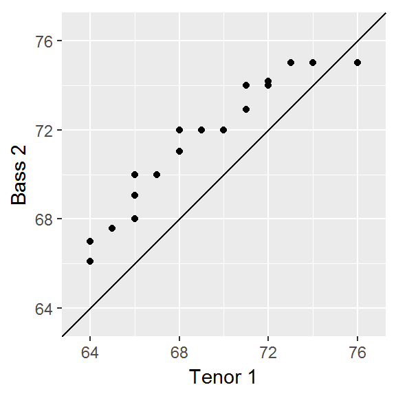
Note that the range of values for both axes may not match; this may influence our visual assessment of the differences. To remedy this, we can force a fixed aspect ratio between both axes.
# Get the range of both datasets
xylim <- range( c(s.qq$"Bass", s.qq$`Tenor 1`) )
# Add a 5% buffer to the xy limits
# (This avoids having the points plotted on the edge of the plot)
xylim <- xylim + c(-0.05 * diff(xylim), + 0.05 * diff(xylim))
ggplot(s.qq, aes( x= `Tenor 1`, y = `Bass 2`)) +
geom_point() +
geom_abline( intercept=0, slope=1) +
coord_fixed(ratio = 1, xlim=xylim, ylim = xylim)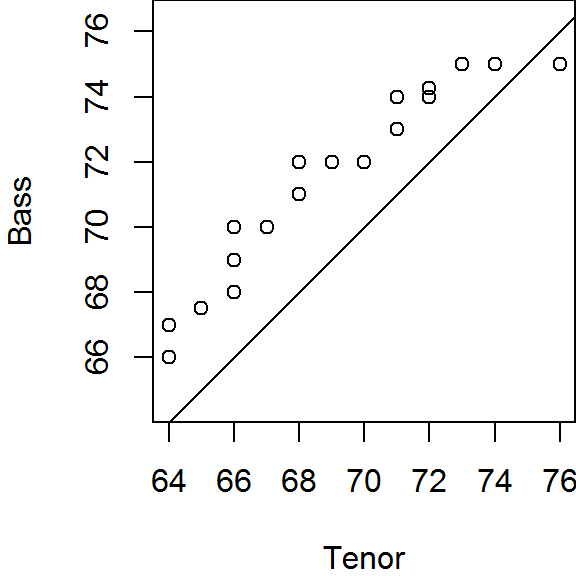
Using the base qqplot
This approach is quicker and requires fewer lines of code, but it does not afford the insight into the inner workings of a q-q plot as does the manual approach from the previous section.
qqplot is a base package that will generate a q-q plot using the base plotting environment. It requires that the two batches be loaded as separate vector objects.
Tenor <- filter(df, voice.part == "Tenor 1") %>% pull(height)
Bass <- filter(df, voice.part == "Bass 2") %>% pull(height)
qqplot(x=Tenor, y=Bass, asp=1)
abline( c(0,1))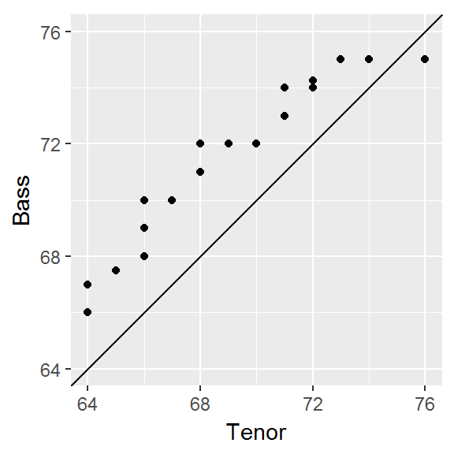
qqplot offers the option to output the q-q plot values (including the interpolated values) as a list by setting the parameter plot.it=FALSE. We then need to convert this list object to a dataframe using as.data.frame. The output can then be used in a call to ggplot.
# Create the quantile-quantile data table
qq.out <- qqplot(x=Tenor, y=Bass, plot.it=FALSE)
qq.out <- as.data.frame(qq.out)
# Set the x and y limits
xylim <- range( c(qq.out$x, qq.out$y) )
# Generate the QQ plot
ggplot(qq.out, aes( x= x, y = y)) +
geom_point() +
geom_abline( intercept=0, slope=1) +
coord_fixed(ratio = 1, xlim=xylim, ylim = xylim) +
xlab("Tenor") + ylab("Bass")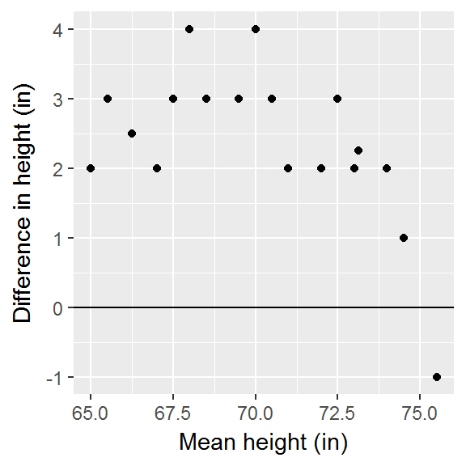
Note that qqplot generates a wide table where the Tenor height values and the interpolated Bass values are side-by-side (note that x and y were assigned when we called the qqplot function in the last code chunk).
head(qq.out) x y
1 64 66.0
2 64 67.0
3 65 67.5
4 66 68.0
5 66 69.0
6 66 70.0Note: The difference in output between our manual approach and
qqplot’s approach is small. If you want to faithfully recreateqqplot’s output using the manual approach, compute the f-values as \((i -1)/(n-1)\).
q-q plots vs. traditional scatter plots
It’s important to note the difference between a quantile-quantile plot and a traditional scatter plot whereby the pairing of values between variables is explicitly defined (for example average male and female income values paired by county). The singer data does not assume any pairing of observations (e.g. the height measurement for a singer in Bass 2 is independent for that of a singer in Tenor 2). This is made more evident with our working example which has unequal number of singers in both groups being compared. The pairing of values in a q-q plot is constructed from the ordering of values in each batch and nothing more.
What can we learn from a q-q plot?
A valuable by-product of an empirical q-q plot is the mathematical relationship between the batches of values. If the distributions are identical (i.e. all the points of a q-q plot fall on the 45° line) then we could characterize the relationship as batch1 = batch2. If the points follow a pattern mimicking a line parallel to the 45° line as in the following plot,
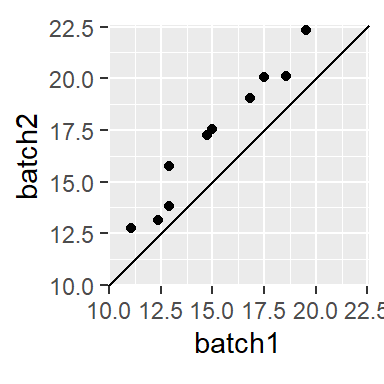
then we say that there is an additive shift between batch1 and batch2. The shift can usually be eyeballed from the plot. In this example, the shift is around 2 or batch2 = 2 * batch1.
When the points follow a line at an angle to the 45° line as in
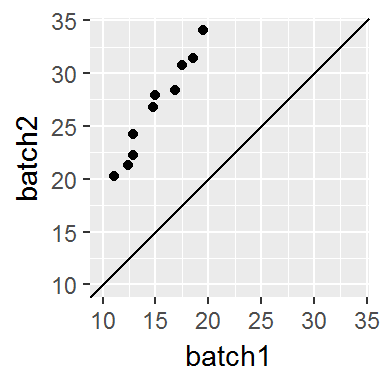
then we say that there is a multiplicative shift between the batches. The multiplier can be a bit difficult to glean graphically so trial and error may be the best approach whereby we multiply one of the batches by the inverse of the suspected relationship. For example, if we believe that batch2 is 1.5 times greater than batch1, we divide the former by 1.5 then plot the result to see if the points line up.
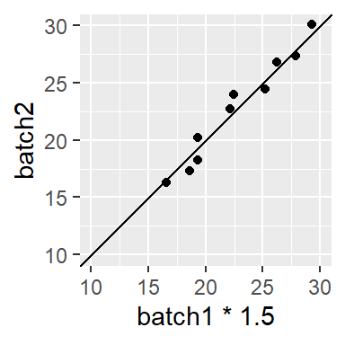
In many cases, you might encounter a relationship that is both additive and multiplicative in which case you should first resolve the multiplicative part of the pattern until the points are close to parallel to the 45° line, then resolve the additive portion. For example, the following plot
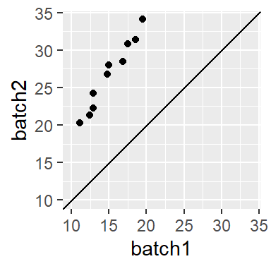
can be decomposed into its multiplicative component (divide by ~ 1.5),
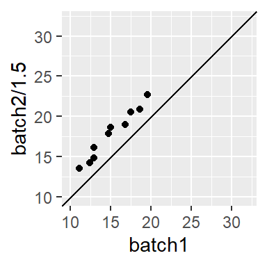
then by its additive component (subtract by ~ 3.5),
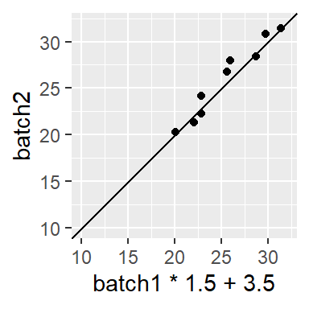
to get the approximate relationship of batch2 = batch1 * 1.5 + 3.5.
Is the relationship between tenor and bass additive or multiplicative?
Turning back to our voice part dataset, an additive shift is apparent, but a multiplicative shift not as much. To check, we’ll subtract the Bass 2 value by about 2.5.
ggplot(s.qq, aes( x= `Tenor 1`, y = `Bass 2` - 2.5)) +
geom_point() +
geom_abline( intercept=0, slope=1) +
coord_fixed(ratio = 1, xlim=xylim, ylim = xylim) + ylab("Bass 2 - 2.5")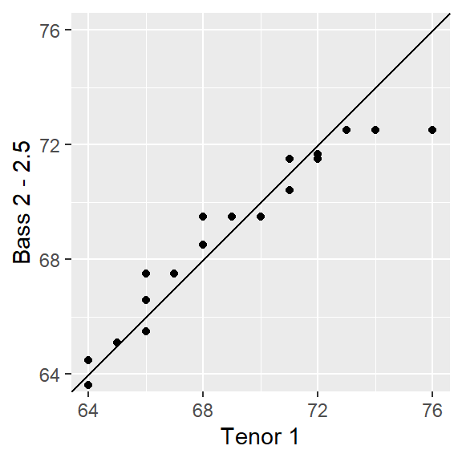
The bulk of the data appears to follow an additive shift except for one or two outliers at the upper end of the distribution. These outliers should not mislead us into assuming that a multiplicative offset is warranted here.
The Tukey mean-difference plot
Our eyes are better suited at judging deviations from a horizontal line than from a 45° line. All that is required is to subtract the y-value (Bass2) from the x-value (Tenor 2) then compare the difference to the mean of the two values:
\[ Y = Bass- Tenor \] \[ X = \frac{Bass + Tenor}{2} \]
This forces the 45° line in the previous q-q plots to a 0° slope. The final plot is a Tukey mean-difference plot or m-d for short.
Generating a Tukey m-d plot using ggplot
We continue with the qq.out dataset generated from the qqplot function.
md.y <- (qq.out$y - qq.out$x)
md.x <- (qq.out$y + qq.out$x) * 0.5
df.md <- data.frame(md.x, md.y)
ggplot(df.md, aes(x = md.x, y = md.y)) + geom_point() + geom_abline( slope=0 ) +
xlab("Mean height (in)") + ylab("Difference in height (in)")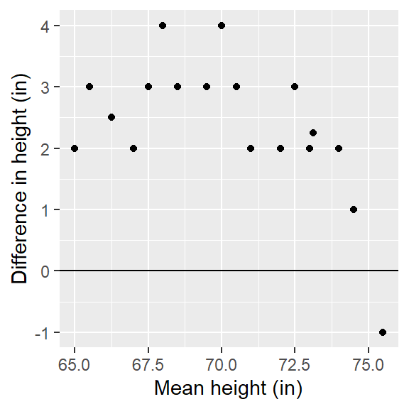
The units on both axes are in inches. It’s clear from this plot that differences in heights are pretty much consistent across the quantiles with an additive shift of about 2.5 inches, except near the higher quantiles for a few lone points.
Pairwise q-q plots
A pairwise q-q plot allows one to view all combinations of batch pairs. This requires that we first find the smallest batch of height values, then interpolate all other batch values to match the smallest batch quantiles. Note that the pairwise plot is symmetrical about the diagonal. Here, we’ll make use of the lattice package to generate the pairwise q-q plots.
library(lattice)
# Find smallest batch
f.rng <- min(tapply(singer$height, singer$voice.part, length))
# Define quantile function
fun1 <- function(x,f.rng) {approx(1:length(x), sort(x), n = f.rng )$y}
# Compute quantiles for all factors
t1 <- aggregate(singer$height ~ singer$voice.part, FUN=fun1, f.rng=f.rng )
# Flip table and name columns
t2 <- as.data.frame(t(t1[,-1]))
names(t2) <- t1[,1]
# Label columns of qmat using names of voice parts.
splom(~t2, axis.text.cex=0.6, pch = 20,
varname.cex=0.8,
pscales=3,
xlab="Heights (inches)",
prepanel.limits = function(x) (range(t2)), # force all axes the same
panel = function(x,y,...){
panel.grid()
panel.splom(x,y,...)
panel.abline(0,1,col="grey")
})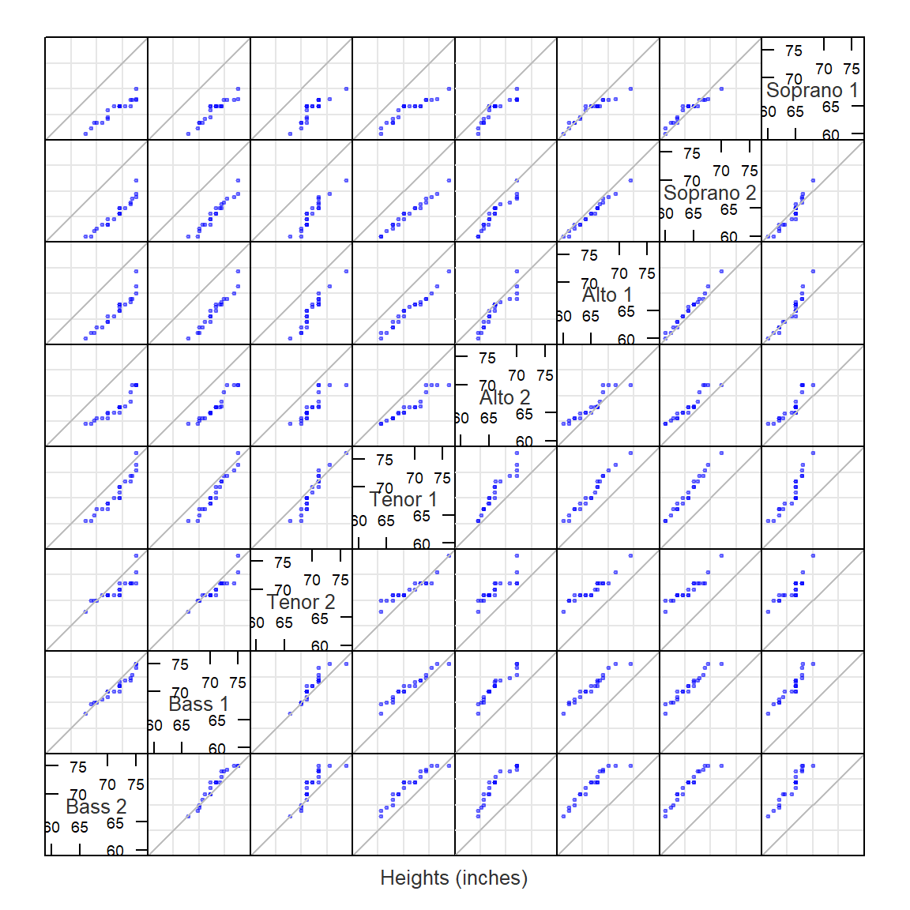
 Manny Gimond (2021)
Manny Gimond (2021)